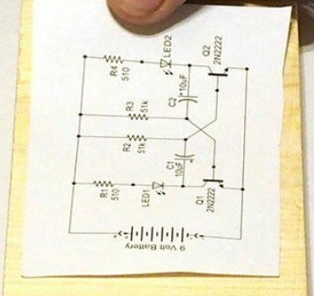
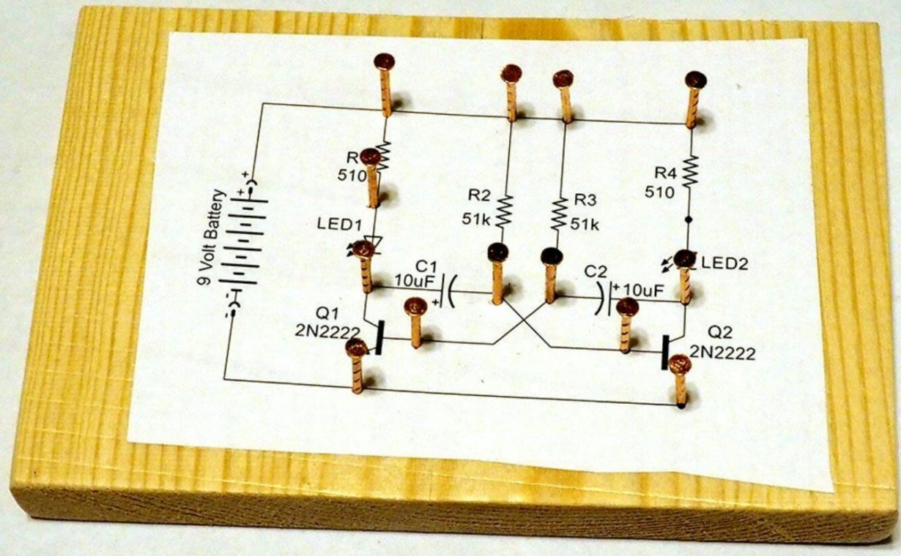
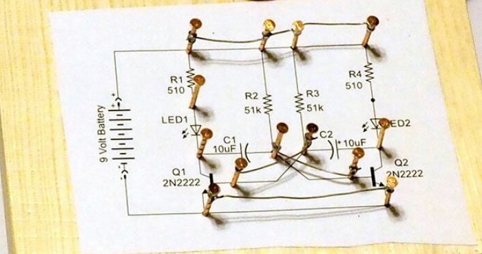
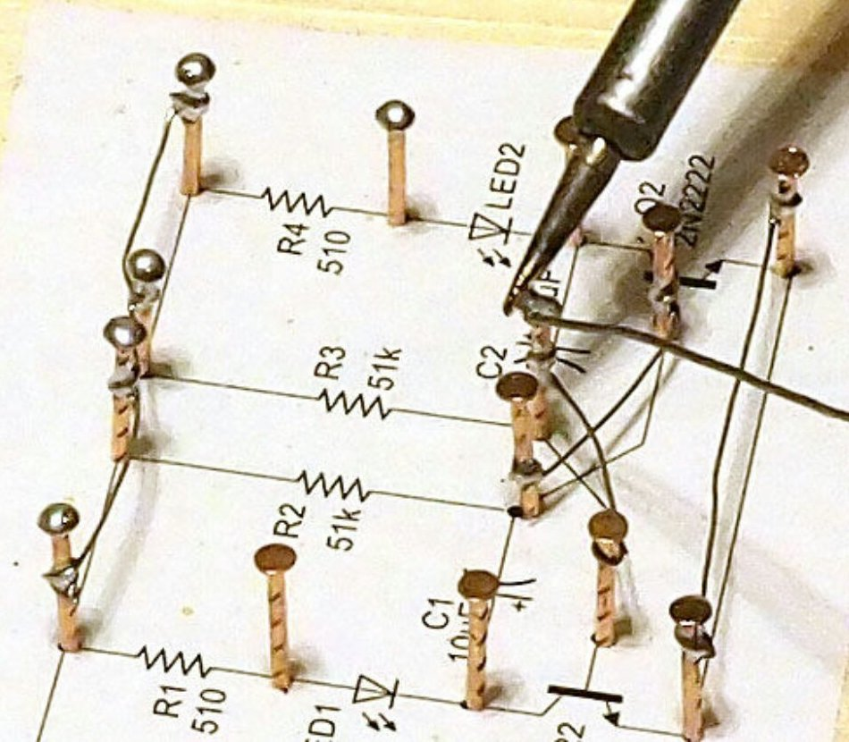
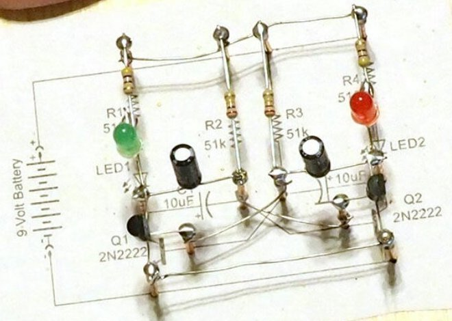
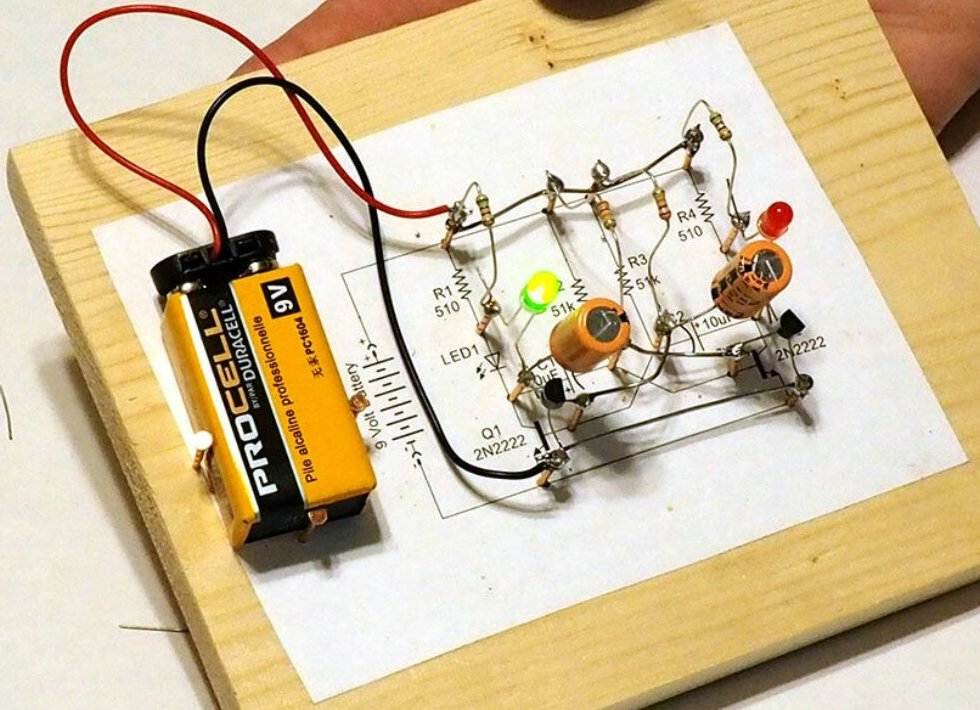

Cхема на гвоздях
Распечатав в подходящем масштабе схему, вырезаем её и приклеиваем в середину доски (рис. 1).

Рис. 1 -
Забиваем медные гвозди во все точки соединения выводов компонентов (рис. 2).

Рис. 2 -
Накручиваем на гвозди и припаивает к ним все перемычки (рис. 3). Те из них, которые в схеме пересекаются, располагаем на разных высотах. При желании можно одну из них изолировать трубкой.

Рис. 3 -
Залуживаем шляпки всех гвоздей (рис. 4).

Рис. 4 -
Припаиваем к шляпкам электронные компоненты (рис. 5).

Рис. 5 -
Подключаем, соблюдая полярность, батарею с колодкой, позволяющей её отключать (рис. 6). Обратите внимание на простейший "карман" для батареи, состоящий из трёх гвоздей.

Рис. 6 -